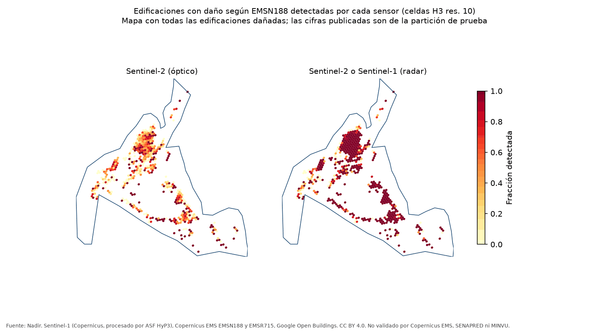
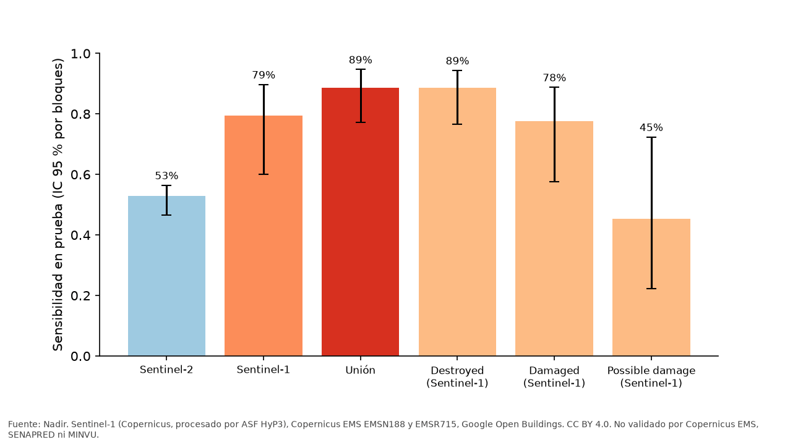
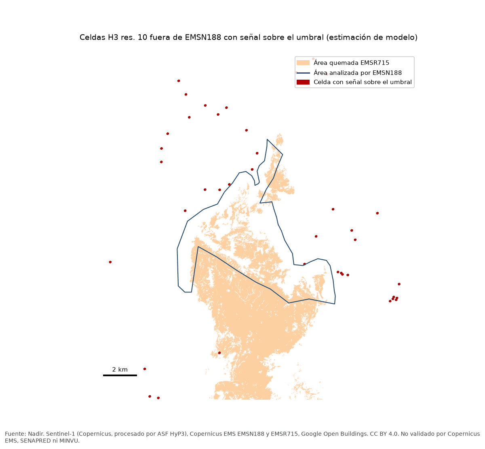

Daño probable según radar, no un dictamen sobre cada vivienda. Copernicus EMS, SENAPRED y MINVU no validaron estos resultados.
79,4 %
de las edificaciones con daño según Copernicus EMS mostraron un cambio en el radar Sentinel-1. Un cambio indica daño probable, no lo confirma.
Intervalo del 95 %, 59,9 % a 89,7 %. Todas las cifras de esta página son de la partición de prueba, evaluada una sola vez.

El radar suma lo que el óptico no ve
Sentinel-2, todas las clases quemadas, detecta 53,0 % (46,6 % a 56,4 %). Con el radar se llega a 88,7 % (77,1 % a 94,7 %).
Es la regla óptica más favorable a Sentinel-2.


Falsas alarmas
Marca 4,3 % (3,0 % a 6,0 %) de las edificaciones sin daño registrado y 1,3 % (1,0 % a 1,6 %) de las que están lejos del fuego.


Fuera de la zona afectada
El radar no marca un área de daño fuera de la zona afectada. Solo 40 de 8.763 celdas superan el umbral, dispersas.
Estimación de modelo.


Detalle
- La referencia es el "Detailed damage assessment" de Copernicus EMS (EMSN188), una fotointerpretación sobre una imagen posterior al incendio. Sus edificaciones sin punto son "sin daño registrado", no "sin daño".
- Por grado de daño. Destroyed 88,6 % (76,5 % a 94,4 %); Damaged 77,7 % (57,6 % a 88,8 %); Possible damage 45,3 % (22,2 % a 72,4 %).
- Entre las edificaciones dañadas que el óptico no detectó, el radar recupera 76,1 % (55,7 % a 88,0 %). Suma 35,8 puntos porcentuales a la detección óptica.
- Con el umbral calibrado, que es la cifra principal del caso de severidad, el óptico deja en quemado 35,9 % de las edificaciones dañadas de la muestra de ese caso (n = 145).
- Precisión, es decir, marcas del radar con daño registrado, 62,5 % (44,9 % a 71,3 %). Capacidad de ordenar (AUC) 0,94.
- Por órbita. Ascendente 65,0 % (45,6 % a 78,6 %); descendente 71,3 % (50,8 % a 83,9 %).
- Con huellas de edificios de confianza 0,65 o más, 77,9 % (59,1 % a 89,2 %).
- Las falsas alarmas lejos del fuego se miden en edificaciones a más de 2 km del área quemada de Copernicus EMSR715.
- Fuera de la zona de EMSN188, de las 40 celdas sobre el umbral, 1 toca el área quemada de EMSR715 y 2 quedan a menos de 500 m de ella.
- 2,3 % de los 7.275 puntos de daño de EMSN188 no tienen una huella de Google Open Buildings a 10 m o menos.
Avisos y atribuciones
- El radar mide cambio, no su tipo. Una marca es daño probable, no una casa destruida.
- No hay mapa por vivienda. Los resultados se publican solo por celda hexagonal.
- EMSN188 es la referencia, no la verdad.
- Copernicus EMS, SENAPRED y MINVU no validaron estos resultados.
Atribuciones
- Contains modified Copernicus Sentinel data 2023-2024, processed by ESA.
- Sentinel-1 Burst InSAR products processed by ASF DAAC HyP3 2026 using ISCE software (hyp3_isce2 3.0.2, ISCE 2.6.5).
- Copernicus Emergency Management Service (© 2024 European Union), EMSN188 P08 Detailed damage assessment, y EMSR715 AOI01 Delineation Map v2.
- Google Open Buildings (CC BY 4.0).
- Severidad de Sentinel-2: Nadir, incendio de Viña del Mar 2024 (CC BY 4.0).
Datos y licencias
| Archivo | Filas | Peso | Licencia |
|---|---|---|---|
| celdas_r10.parquet | 10.458 | 197 KB | CC BY 4.0 |
| celdas_r9.parquet | 2.116 | 52 KB | CC BY 4.0 |
| validacion.parquet | 96 | 6 KB | CC BY 4.0 |
Cómo citar
López Barra, C. Daño a edificaciones en el incendio de Viña del Mar, febrero de 2024. Nadir: observatorio de riesgo y exposición. https://nadir-observatorio.github.io/dano-edificaciones.html (consultado el día en que lo visitó).